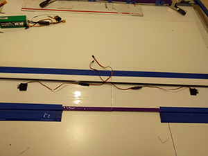

Build
Airframe
A good starting point
Jumping straight into building a drone for mapping will likely be frustrating. I started with simple, scratch built "foamies" that lack any of the fancy electronics of a more advanced drone. Flite Test has a ton of resources as well as a store where you can purchase kits to facilitate beginner build attempts. These simple builds will give you practice working with foamboard and flying with less time invested in each step (so the inevitable mistakes and failures will be less painful to recover from).
My Tiny Trainer and the Flite Test build video with additional links in the video description.
My FT Spear and the Flite Test build video with additional links in the video description.
First attempts at a drone... what didn't work
My initial thoughts on airframe construction were to sandwich the electronics between protective layers of polycarbonate sheets held apart by screws. These attempts looked good but were simply too heavy and not aerodynamic enough. A couple of iterations of both a pusher design, with the propeller at the back of the main fuselage, and a standard orientation proved fruitless.
I've chosen to leave out the post "flight" pictures of these early attempts.
Ansley Peace Drone (APD)
Ed of ExperimentalAirlines has designed a foamboard airframe dubbed the Ansley Peace Drone (APD). His Peace Drone XR and it's ability to push 2kg of total weight made me think it could easily fly with the electronics for mapping. And it certainly can. The version I constructed has a 3" fuselage tube (30" plus a 15" extension) with the space for the camera at the front (replaced by a equivalently sized/weighted box during tests and practice flights) followed by the battery and then the Pixhawk and associated electronics.
The 30" canard wing has a 7" airfoil chord. The main wing is 60" with a 7" airfoil chord, 1.5" control surface (with a 16" gap in the control surface around the motor). The servos are 14" from the center of the drone and 3" forward of the control surfaces so they fit cleanly within the wing and the 1m center carbon spar extends past them.

The ExperimentalAirlines YouTube channel has videos that extensively cover every aspect of the construction.
Overview
- Introduction
- Setup & Breakdown
- Flight Video
- 10 Ansley Peace Drones from around the world
- Peace Drone v2
- Peace Drone XR
Build
- Tapes for RC airplane construction
- Armin wing
- Armin wing part 1 - tape covering foamboard
- Armin wing part 2 - cutting, beveling, bending the airfoil
- Armin wing part 3 - forming and gluing the wing
- Armin wing part 4 - making the control surfaces
- Armin wing part 5 - spar selection and planning
- Armin wing part 6 - wing joining concepts
- Armin wing part 7 - servo installation
- Armin wing part 8 - wing tip caps and improved trailing edges
- Armin wing part 9 - two tone coloring
- Stabilizers 1 - leading & trailing edges
- Stabilizers 2 - control surface hinges
- APD Canard wing
- APD Main wing
- Foamboard fuselage tubes
- APD fuselage construction
- Fuselage tubes ideas and variations
- Building Techniques - hatches
- Building Techniques - metal motor mounts
Airframe tips & tricks
- Keep your working surface and measuring rule(s) clean of hot glue bits and other stuff as they can indent your wings
- When peeling paper off foamboard, go slowly and use a sharp knife point to prick up anytime it starts to stick and tear off incompletely
- For the winglet stabilizers, tape from trailing edge going forwards for the correct aerodynamic overlap
- When building the second segment of the main wing, to ensure a good match, begin checking alignment using the first wing segment when gluing in the first 2" bottom piece (don't use just the 1" spacer)
Electronics setup
- See the Pixhawk Wiring Quick Start documentation
- Bind the transmitter receiver to the transmitter and plug into the SPK/DSM port on the Pixhawk
- Use a 6-wire cable to connect the telemetry module to the
TELEM 1port on the Pixhawk - Connect the ESC to the power module and the power module to the
POWERport on the Pixhawk using a 6-wire cable - Connect the GPS+compass to the
GPSand12Cports on the Pixhawk - Connect the safety switch button to the
SWITCHport on the Pixhawk
Electronics tips & tricks
- Understanding propeller size
- To center servos, you need to connect them to power and signal from a transmitter as the position of the cog may not be in it's neutral position which will result in the incorrect angle of attachment for the control arm
- Polarity of servo wires
- White, orange, yellow, or black&white (signal)
- Black or brown (-)
- Red (+)
- To change the direction the motor spins, switch two of the wires connecting the ESC to the motor
- Calibrate the ESC (refer to the ESC manual for exact instructions, as the procedure may vary by brand/model)
- If the ESC is not calibrated properly, it doesn't know what signal from the transmitter should be considered as "no power"
- Power off everything
- Turn on the transmitter, apply "max throttle" and keep it there
- Power up your ESC, it should beep in different manner (usually two short, high-pitch beeps)
- Reduce the throttle to "0" (zero)
- The ESC should confirm that with another set of short beeps.
Software setup
- Install mission planner
- Update the Ardupilot firmware on the Pixhawk flight controller
- Details on all parameters
- Parameters of note:
BATT_MONITOR,ARMING REQUIRE,ARSPD_FBW_MAX,ARSPD_FBW_MIN,BATTERY_CAPACITY
Tuning
- Manually adjust the control surface throws
- On the servo arm
- The hole that is closest to the spindle on the servo itself is the least throw
- The hole that is furthest away from the servo on the arm is the most throw
- On the control horn
- The hole furthest away from your control surface has the least throw
- The hole that is closest to your control surface has the most throw
- On the servo arm
- Use Mission Planner to configure an elevon plane
- Ardupilot instructions for first flight
- Automatic tuning using
AUTOTUNEmode
Purchase list
Including tools you should be able to purchase everything for just over $1,000 (not including a laptop for your GCS station).
| Item | Cost | Source |
|---|---|---|
| Holybro PX4 2.4.6 "Pixhawk" Flight Controller Set, w/ M8N GPS, PM, OSD, Radio Telemetry (915Mhz) | $204.00 | getfpv.com |
| H-KING 50A Fixed Wing Brushless Speed Controller | $18.98 | https://hobbyking.com/en_us/h-king-50a-fixed-wing-brushless-speed-controller.html?___store=en_us |
| Turnigy Accucel-6 50W 6A Balancer Charger | $44.90 | https://www.amazon.com/gp/product/B00NUH5DU2/ |
| Adapter for Turnigy Accucel-6 | $15.99 | https://www.amazon.com/gp/product/B00CJ26OSY/ |
| Multistar High Capacity 6600mAh 4S 10C | $42.85 | https://hobbyking.com/en_us/multistar-high-capacity-4s-6600mah-multi-rotor-lipo-pack-1.html?___store=en_us |
| T-MOTOR MT3515-9 KV-650 | $64.90 | http://www.getfpv.com/tiger-motor-mt-3506-25-650kv.html |
| 12x8E prop | $4.99 | local hobby shop |
| DXe DSMX Transmitter | $59.99 | Horizon Hobby |
| DSMX Remote Receiver | $34.99 | Horizon Hobby |
| Tuffwing Canon precision geotag cable | $39.95 | http://www.tuffwing.com/store/store.html |
| Tuffwing Pixhawk to Canon camera trigger cable | $29.95 | http://www.tuffwing.com/store/store.html |
| Tuffwing shipping | $6.95 | http://www.tuffwing.com/store/store.html |
| Canon S110 camera mount | $34.95 | http://www.tuffwing.com/store/store.html |
| Canon S110 | $250.00 | Ebay |
| 2x HS-82MG micro MG servo | $35.98 | local hobby shop |
| Tape Brothers Carton Sealing Tape 2" x 110 yds 2 mils, Purple | $7.99 | Amazon |
| clear packing tape (54.6 yards x 2") | $7.99 | local hardware store |
| duct tape 20yd | $7.99 | local hardware store |
| heavy-duty duct tape 20yd 3M | $9.99 | local hardware store |
| 10x foamcore board | $10.00 | Dollar Tree |
| white styrene (0.030) | $2.49 | local hobby shop |
| pair nylon control horns | $1.99 | local hobby shop |
| Φ1.2mm x L180mm (7.1 inch) steel Z push rods (pack of 10) | $7.99 | Amazon |
| 3" 6" 12" 24" Futaba style servo extension variety pack (4 each) | $16.99 | Amazon |
| 6x carbon rod hollow 8mm OD x 6.5mm ID x 1m | $58.80 | http://www.radicalrc.com/category/Carbon-Rod-Hollow-410 |
| RadicalRC shipping (for min order of 6) | $3.00 | http://www.radicalrc.com/category/Carbon-Rod-Hollow-410 |
| Sponge window seal (1/4" H x 1/2" W x 10' L) | $3.99 | local hardware store |
| Velcro tape (15ft x 3/4 in, holds up to 2.2kg) | $21.99 | local hardware store |
| heavy duty, outdoor mounting tape | $7.99 | local hardware store |
| rubber bands | $7.00 | local office supply store |
| gorilla glue clear 1.75 oz | $5.97 | local hardware store |
| 48" aluminum straight edge | $7.97 | local hardware store |
| X-acto X3311 precision knife w/ 5 No.11 blades | $4.89 | Amazon |
| X-acto #2 Knife | $5.90 | Amazon |
| #2 blades 15-pack | $7.32 | Amazon |
| Adtech Pro200 Glue Gun (200 Watt) | $28.00 | Flite Test |
| Logan Foam Werks Foam Cutting Tool, Straight/Bevel | $15.00 | Amazon |
| Logan Foam Werks Foam Cutting Tool, Straight/Bevel | $9.38 | Amazon |
| 5x 2in spring clamp | $4.95 | http://www.homedepot.com/p/HDX-2-in-Spring-Clamp-80002/100027346 |
Future directions
- Would be nice to have the camera oriented so that more ground to either side of the drone is captured and passes can be spaced farther apart while still achieving good sidelap for image stitching (right now the camera is sideways in the drone so the wider coverage is along the flight path and not to the sides)
- Would be nice to carry a better camera and have different ways of triggering it and recording when/where it captured images
- QX1 triggering with a Pixhawk
- Intel Edison camera trigger Instructable
- QX1 triggering
- Wired camera trigger direct from Pixhawk
- Sony QX1 and QX10 image capture by Python program over WiFi
- Using the intel edison as smart camera controller
- Build a Raspberry Pi-Based cable shutter release for Sony Cameras
- Camera remote release pinout list
- Improve the airframe and build documentation